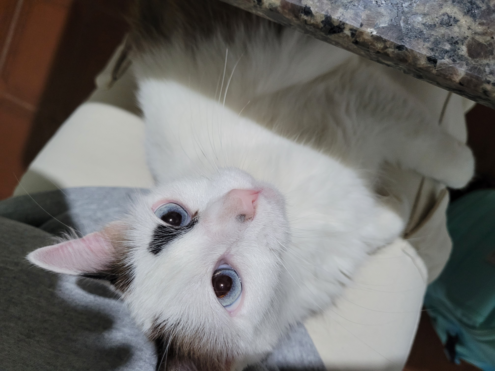

03.07.2023
Suas Patinhas

Fiquei meses sem vê-la, quando fui visitar minha mãe a chamei e ela veio. Subiu no meu colo, abria e fechava as patinhas, como se eu só tivesse ido logo ali e voltado, mas entendi que para ela eu sempre estive presente. Eu a colocava no meu ombro, uma coisa que ela gosta tanto que ronronou e cavou suas unhas nas minhas costas, doeu sim, mas eu aceitei esse 'carinho’ porque é uma froma dela demontrar.